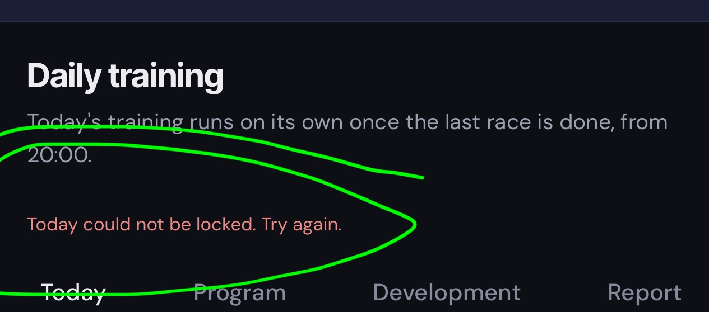

The server finishes the press in ~22 s; a phone that gives up first used to show an error. After: the page checks status and shows the trained day.
BEFORE (beta tester's screenshot, 10/11)

Training had run, but the page said it failed and still looked untrained.
AFTER (mock of the same dropped answer)
Trained today (by you)
Status is checked again; the press landed, so the normal trained state is shown.
BEFORE: real failure, instant mode
AFTER (mock): real failure, instant mode